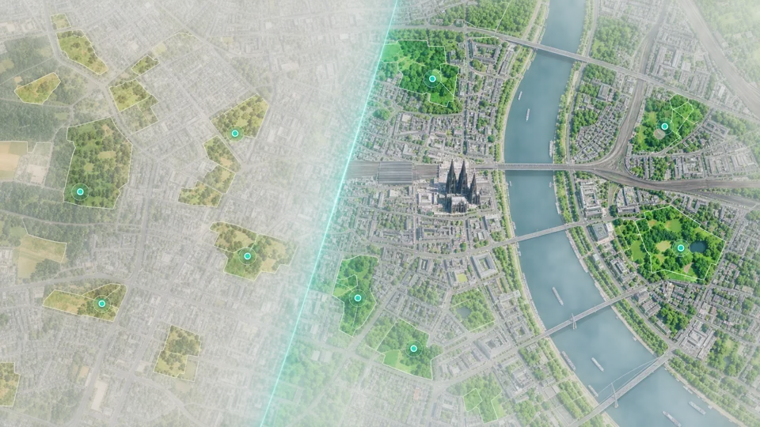

Experiment im Themenfeld Daten und Monitoring
Wie hat sich das Grün in den Kölner Stadtbezirken verändert? Zwei Jahre wählen, Satellitenraster vergleichen und jeden Wert bis zur Datengrundlage zurückverfolgen.
Hinweis: Konzeptansicht mit simulierten Rasterdaten. Die Zahlen zeigen die Methode, nicht den tatsächlichen Zustand der Bezirke.
| Stadtbezirk | Veränderung | Fläche |
|---|
Grundlage sind Sentinel-2-Aufnahmen (10 m Auflösung). Pro Jahr wird ein wolkenbereinigter Sommer-Median (Juni bis August) gebildet und daraus der Vegetationsindex NDVI berechnet.
Als Grünfläche zählt ein Pixel mit NDVI über 0,4. So bleibt jede Zahl reproduzierbar: gleiche Szenen, gleiche Schwelle, gleiches Ergebnis.